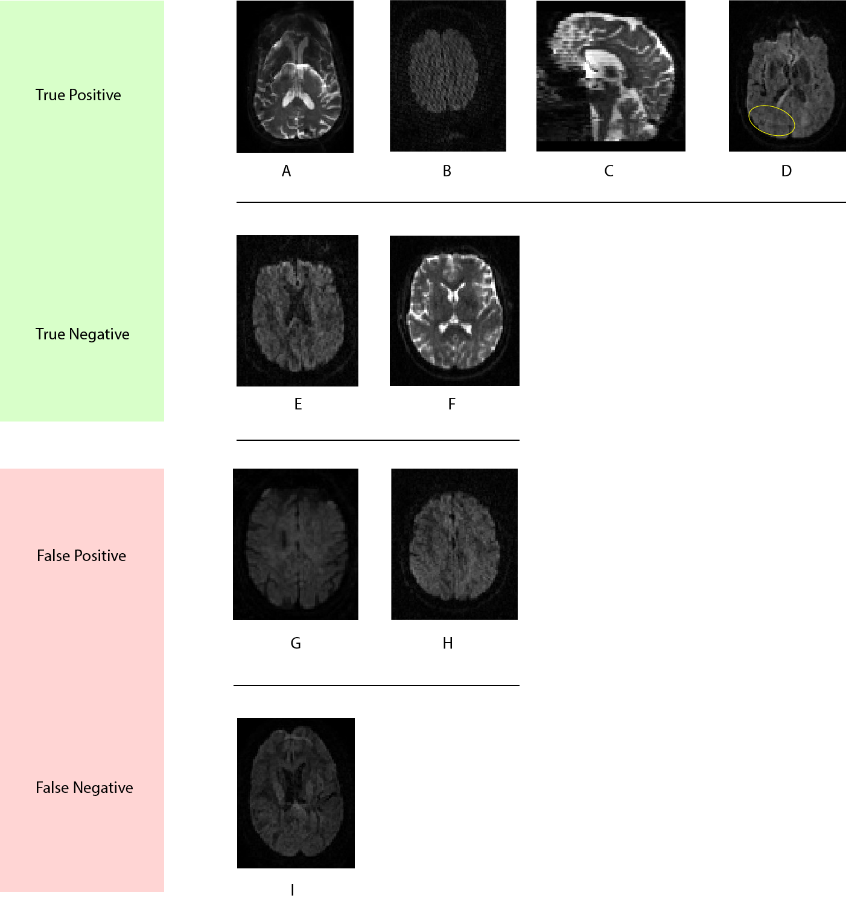

Publications
Sex differences in the structural connectome of the human brain
PNAS
Developmental sex differences in structural connectivity of the brain show significantly higher inter-hemispheric connectivity in females, and higher intra-hemispheric ocnnectivity in males
Neuroimaging Findings in US Government Personnel With Possible Exposure to Directional Phenomena in Havana, Cuba
JAMA
Distinctive cerebellar brain patterns of the Havana Syndrome

Freewater estimatoR using iNtErpolated iniTialization (FERNET): Characterizing peritumoral edema using clinically feasible diffusion MRI data
PLoS ONE
Free water modeling in clinically feasible single shell DTI data with applications in brain tumors and TBI


3D-QCNet - A Pipeline for Automated Artifact Detection in Diffusion MRI images
Comput Med Imaging Graph
3D-QCNet is an automated deep learning (DL) pipeline that can be integrated in diffusion pipelines to automate the process of artifact detection.

Improvement of diffusion tensor imaging-based tractography by free-water correction in nonedematous gliomas: assessment with brain mapping
J Neurosurg
FERNET algorithm significantly enhances the visualization of subcortical bundles in nonedematous gliomas, potentially benefiting surgical planning and safety.
Enhanced Fiber Tractography Using Edema Correction: Application and Evaluation in High-Grade Gliomas
Neurosurgery
Edema correction method that can be applied to standard clinical DTI, enhancing the visualization of motor and language tracts in patients with glioma-associated peritumoral edema.
Individualized Map of White Matter Pathways: Connectivity-Based Paradigm for Neurosurgical Planning
Journal of Neurosurgery
Connectivity-based automated tract segmentation in the presence of tumor infiltration and mass effect
QC-Automator: Deep Learning-Based Automated Quality Control for Diffusion MR Images
Frontiers in Neuroscience
Automated QC of Diffusion MRI data using deep learning, that can accurately detect several dMRI artifacts
Deviation from normative brain development is associated with symptom severity in autism spectrum disorder
Molecular Autism
Autism biomarker based on the deviation of the predicted microstructural brain age from the biological age
System-level matching of structural and functional connectomes in the human brain
Neuroimage
Communication patterns of the brain

Assessing connectivity related injury burden in diffuse traumatic brain injury
Human Brain Mapping
Connectivity-based biomarker of TBI